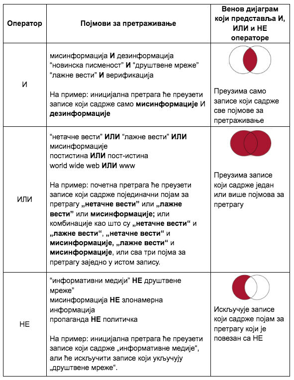
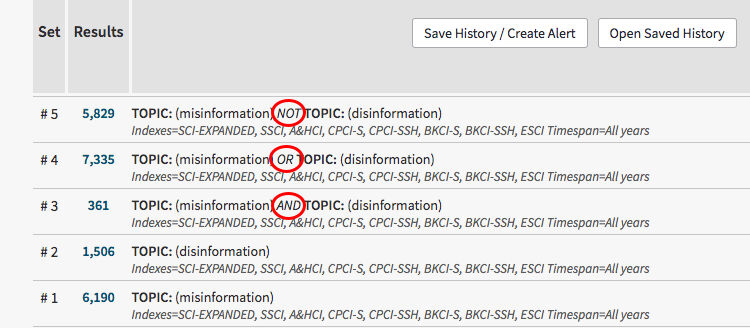
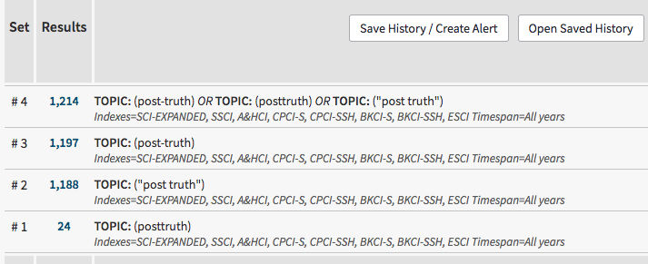
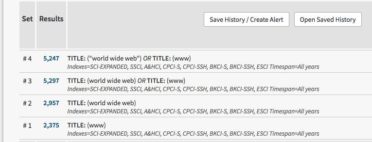
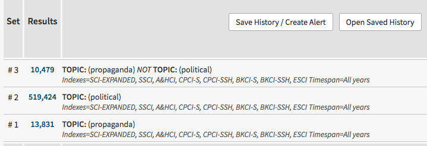
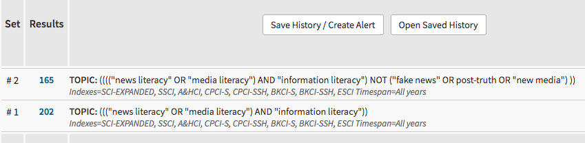
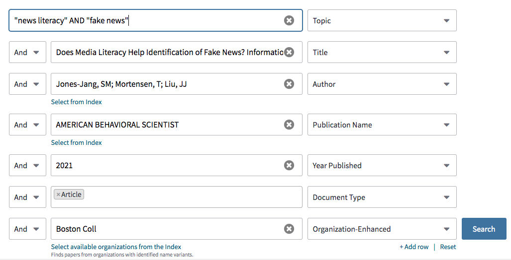
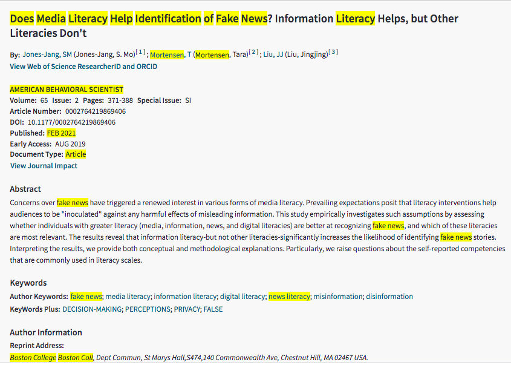
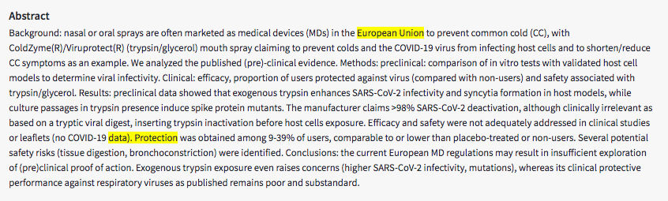
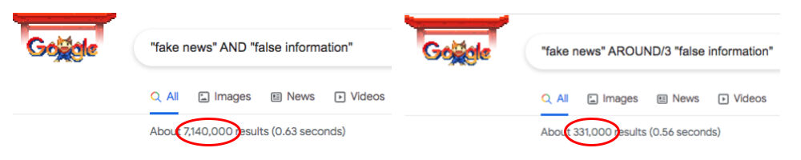

За полазнике
За тренере
За полазнике
За тренере
Модул 14: Eфикасне стратегије претраживања
Опис модула
Главни циљ овог модула је да објасни поједине функције претраживања и оператора неопходних за развијање ефикасне стратегије претраживања.
Секундарни циљ је да усмери тренере који желе да користе садржај овог модула за обуку полазника.
У складу са овим циљевима, у модулу је престављена Булова логика, контролисани речници, изборно претраживање, контекстуално претраживање, скраћивање и џокер знаци, лимити ограниченог претраживања, заједно са смерницама о томе како да се предмет предаје.
Полазници који успешно заврше овај модул моћи ће да:
- разумеју зашто је важна ефикасна стратегија претраживања,
- разумеју Булову логику и дефинишу операторе (И, ИЛИ, НЕ),
- разумеју значај контролисаних речника,
- разумеју претрагу у пољу и дефинишу основна поља,
- дефинишу операторе близине (контекстуалне операторе) и разликују суседне и оближње операторе
- разумеју зашто и како да користе скраћивање и џокер знаке.
Поред тога, тренери који успешно заврше овај модул, моћи ће да покажу разумевање смерница за обрађивање ове теме.
Структура модула
Овај модул се састоји из следећих целина:
- Циљ, опис садржаја и исходи учења
- Структурa модула
- Смернице за полазнике
- Смернице за тренере (како се припремити, методе које треба користити и савети за тренере)
- Садржај (материјал за учење и вежбање)
- Квиз
- Референце (цитирани извори, препоручени извори и видео-записи)
Главни циљеви модула, опис садржаја и исходи учења објашњени су у делу Опис модула. Садржај обухвата све материјале за учење и вежбе везане за садржај. Квиз укључује питања са вишеструким избором како би полазници тестирали свој напредак. Одељак Референце обухвата списак извора цитираних у садржају модула и листу додатних извора и видео-записа који се препоручују за читање и гледање како би се проширило знање о овој теми. Смернице за полазнике укључују упутства и сугестије за полазнике. Смернице за тренере воде тренере кроз различите фазе обуке и дају савете који би могли да буду корисни током предавања предмета.
Смернице за полазнике
Од полазника се очекује да прочитају текст и ураде вежбања. Они могу да консултују предложене ресурсе за додатне информације. Након проучавања садржаја, полазницима се препоручује да ураде квиз како би проценили свој напредак. Уколико је потребно, могу поново проучити материјал за учење.
Смернице за тренере
Смернице за тренере укључују сугестије и савете о томе како да користе садржај овог модула за обуку полазника на тему коришћења ефикасних стратегија претраживања.
Припрема
Припремите презентацију (Пауерпоинт/Прези/Канва) која је обогаћена визуелним материјалима и која приказује резултате претраживања у оквиру базе података/интернет претраживача. Током курса се такође препоручује демонстрација у реалном времену.
Почетак
Како бисте увели полазнике у тему, на почетку можете користити кратак квиз (3 до 5 питања) направљен у Кахуту или им поставити питања путем Ментиметар апликације. Поменути квиз и питалице се могу користити као мотивационо средство и средство за проверу постојећег знања полазника о овој теми. Питања, на пример, могу бити: Шта су Булови оператори? Шта су скраћивања? Како можемо да користимо “знаке навода” за претраживање фраза?
Методологија
Током обуке могу се комбиновати различите наставне методе:
- Предавања
- Рад у групама
- Индивидулани рад
- Самопроцењивање
Савети за тренере
Загревање
Ефикасан начин укључивања полазника и утврђивања заједничких очекивања о томе шта ће научити јесте постављање неколико прелиминарних питања о овој теми. На пример, полазнике можете замолити да спроведу онлајн претрагу за један или више договорених упита. Активност се може спровести на следећи начин:
- припремите различите упите за које је потребно применити стратегије претраживања
- изаберите базу података за сваки упит
- замолите полазнике да изврше онлајн претрагу за ове упите
- замолите полазнике да сачувају своју стратегију претраживања и резултате
- замолите полазнике да поделе и дискутују о својим резултатима са другим учесницима
Након овога, уверите се да учесници разумеју да различите стратегије претраживања доносе различите резултате. Полазници обуке треба да разумеју предности ефикасних стратегија претраживања.
Представљање циља лекције
Циљ лекције треба да буде јасан (а то је да се објасне ефикасне стратегије претраживања и разуме утицај коришћења ових стратегија на резултате претрживања). Након питања за загревање, лакше ћете разјаснити циљеве.
Представљање садржаја лекције
Приликом представљања садржаја, водите рачуна о интеракцији са полазницима и подстакните их на активно учешће.
Пре
- Пре часа припремите упите како би полазници вежбали претраживање (одредите упите, извршите претрагу ових упита и испробајте различите базе података за упите)
- Пре часа одлучите који ће се извори и базе података користити за вежбање
Током
- На почетку часа питајте полазнике за њихово мишљење о томе зашто је ефикасна стратегија претраживања важна
- На почетку часа питајте полазнике какав је ефекат ефикасне стратегије претраживања на проналажење информација
- На почетку часа замолите полазнике да изврше претраживања по датим упитима и сачувају добијене резултате
Након
- Након што сте објаснили целине, замолите учеснике да спроведу исте претраге које су обављене на почетку лекције. На пример, када сте завршили објашњавање Булових оператора, замолите учеснике да спроведу исти упит, користећи Булове операторе
- Упоредите претходно сачуване резултате са новим резултатима
- Поједине технике (на пример скраћивање, џокер знаци, итд.) могу да се разликују у зависности од базе података. Спроведите исте упите у различитим базама података
- Разговарајте са учесницима о добијеним резултатима
Сугестије
- Обавезно поткрепите своје часове практичним примерима и вежбама
Закључак
Направите кратак резиме лекције и поставите неколико питања која ће помоћи да истакнете најважнији садржај и праксе које желите да нагласите. На пример:
Зашто су важне ефикасне стратегије претраживања?
Након дискусије, уверите се да полазници разумеју да су стратегије претраживања веома важне за проналажење информација и да дају истраживачима свеобухватан план за спровођење њихове претраге. Познавање ефикасних стратегија претраживања омогућиће полазницима да темељно и ефикасно задовоље потребе за информацијама.
Садржај: Eфикасне стратегије претраживања
Увод
Новинска писменост укључује разумевање улоге вести у друштву, мотивацију за тражење вести и способност да се пронађу, идентификују, препознају, критички процене и креирају вести (Malik, Cortesi & Gasser, 2013, стр. 8-9). Уопштено речено: да би били писмени (информационо, новински, финансијски, итд.), људи морају да поседују вештине и знање да пронађу информације које ће задовољити њихове потребе.
Ефикасна стратегија претраживања је важна како би се пронашле информације релевантне за теме истраживања. Уопштено говорећи, стратегија претраживања је свеобухватан план за постизање циљева истраживања. Пре него што започнете онлајн претрагу (спровођење ефикасне стратегије претраживања) потребно је да утврдите да ли је упит познати појам или претрага по предмету. Претрага познатог појма је упит за стварни (или познати) извор. У овој врсти претраге се користе информације које описују ставку као што су име аутора, наслов, назив публикације, итд. Претрага по предмету представља упит за информације о теми. “Ово је најизазовнији тип претраге јер не можете прецизно да наведете шта вам је потребно, а шта можете безбедно да одбијете” (Fulton & McGuinness, 2016, стр.123). Вреди напоменути да су ефикасне стратегије претраживања посебно важне и одлучујуће за ову врсту претраживања.
Након одлучивања о врсти упита, потребно је одабрати релевантан извор/базу података (види Модул 12). Након тога потребно је урадити фасетну анализу и логичку комбинацију. “Фасета је реч или веома кратка фраза која описује један концепт или идеју” (Markey, 2019, стр.98). На пример: Да ли постоји веза између “лажних вести” и “друштвених мрежа”; за овај упит фасете су: лажне вести и друштвене мреже.
Након претходне припреме за претрагу, требало би применити ефикасну стратегију претраживања. У овом одељку ћемо испитати неке од функција претраживања и оператора неопходних за развој ефикасне стратегије претраживања.
Булова логика
Булови оператори (eng. boolean operators) се користе у већини информационих база података и претраживача, пружајући могућност комбиновања синонима и варијантних концепата како би се приступило релевантним ставкама (Alexander, 2003, стр. 62).
Булова логика се односи на логички однос између појмова у претрази. И, ИЛИ и НЕ су основни Булови оператори. Ови оператори шире или сужавају претрагу.
- И (енг. AND) се убацује између два појма: Овај оператор говори систему за претраживање да пронађе изворе који садрже оба појма,
- ИЛИ (енг. OR) се убацује између два појма: Овај оператор говори систему за претраживање да пронађе изворе који садрже било који појам,
- НЕ (енг. NOT) се умеће између два појма: А и Б, овај оператор говори систему за претраживање да искључи оне изворе који носе други појам, Б, из првог појма, А (Markey, 2019, стр. 100).

Пример 1: Извршавање тематске претраге у бази података Web of Science
Термини за претраживање: misinformation (мисинформације), disinformation (дезинформације)
Булови оператори: AND (и), ОR (или), NOT (не)

У горњој претрази:
# 1 ће пронаћи записе на тему мисинформација.
# 2 ће пронаћи записе на тему дезинформација.
# 3 ће пронаћи записе који садрже обе теме, о мисинформацијама и дезинформацијама.
# 4 ће пронаћи записе који садрже теме о појединачним појмовима за претрагу misinformation или disinformation; или теме са оба термина за претрагу која се појављују заједно.
# 5 ће пронаћи само записе који садрже тему мисинформација и искључиће записе на тему дезинформација.
Пример 2: Извршавање тематске претраге у бази података Web of Science
Термини за претраживање: posttruth, post truth, post-truth
Булови оператори: ОR (или)

У горњој претрази:
# 1 ће пронаћи записе у којима се појављује појам posttruth.
# 2 ће пронаћи записе у којима се појављује појам “post truth”.
# 3 ће пронаћи записе у којима се појављује појам post-truth.
# 4 ће пронаћи записе који садрже појединачне термине за претрагу posttruth или “post truth”, или post-truth; или комбинације као што су “posttruth” и ”post truth”, “posttruth” и post-truth, “post truth” и post-truth; или сва три термина за претраживање заједно у истом запису.
Пример 3: Извршавање претраге по наслову у бази података Web of Science
Термини за претраживање: www, world wide web, “world wide web”
Булови оператори: ОR (или)

У горњој претрази:
# 1 ће пронаћи записе са појмом www у наслову.
# 2 ће пронаћи записе са појмом world wide web у наслову.
# 3 ће пронаћи записе са појмовима world wide web и www заједно у наслову; или записе са само једним од појмова за претрагу у наслову.
# 4 ће пронаћи записе са појмовима “world wide web”, и www заједно у наслову; или записе са само једним од појмова за претрагу у наслову.
Пример 4: Извршавање тематске претраге у бази података Web of Science
Термини за претраживање: propaganda, political
Булови оператори: NOT (не)

У горњој претрази:
# 1 ће пронаћи записе на тему пропаганде.
# 2 ће пронаћи записе на тему некаквог политичког деловања.
# 3 ће пронаћи записе на тему пропаганде, али ће искључити записе на тему политичке пропаганде.
Груписање израза
Груписање израза (енг. nesting) се користи за организовање логике претраживања и редоследа којим ће се извршавати Булове операције. Груписање израза се обично означава коришћењем заграда (Alexander, 2003, стр. 62). Груписање израза користи заграде како би се заједно задржали концепти који су слични и наређује бази података да прво тражи термине за претрагу који се налазе у заградама. Систем обрађује Булову операцију тако што прво чита наредбу у најдубљим заградама, а затим наставља да чита према споља до крајњих заграда.
Пример 1: Topic = ((news OR media) AND literacy) NOT “new media”
((новинска ИЛИ медијска) И писменост) НЕ "нови медији"
У горњем примеру, база података ће прво пронаћи документе о новинској ИЛИ медијској (И) писмености и изузети (НЕ) документе који укључују појам “нови медији”.
Пример 2: Извршавање тематске претраге у бази података Web of Science
Термини за претраживање: news literacy (новинска писменост), media literacy (медијска писменост), information literacy (информациона писменост), post-truth (пост-истина), fake news (лажне вести), new media (нови медији)
Булови оператори: AND (и), ОR (или), NOT (не) и ГРУПИСАЊЕ ИЗРАЗА

У горњој претрази:
# 1 ће пронаћи записе који обрађују теме новинске писмености и информационе писмености; или медијске писмености и информационе писмености.
# 2 ће прво пронаћи записе о темама новинска писменост и информациона писменост; или медијска писменост и информациона писменост; и искључити документа која укључују појмове “лажне вести” или “пост-истина” или “нови медији”.
Вежбања
- Размотрите ове исказе. Покушајте да опишете речима какав би био садржај докумената до којих бисте дошли користећи ове исказе. Испробајте исказе у једној мултидисциплинарној бази података (нпр. ScienceDirect, Academic Search Ultimate)
magazines OR journals NOT books
(magazines OR journals) NOT books
(magazines OR journals) AND books
magazines OR (journals AND books)
(magazines OR (journals NOT books)) AND libraries - Одаберите неколико термина који се односе на тему која вас занима и покушајте да комбиновањем Булових оператора добијете жељени резултат.
Контролисани речници
Базе података користе контролисане речнике (енг. controlled vocabularies) за индексирање записа; ово је једна од најважнијих разлика, у смислу претраживања, између база података и Веба (Fulton & McGuinness, 2016, стр. 131).
Контролисани речник је “организовани распоред речи и фраза који се користе за индексирање садржаја и/или за преузимање садржаја путем прегледања или претраживања” (Harpring, 2010). Другим речима, контролисани речник је листа еквивалентних термина у облику скупа синонима, или листе преферираних термина. Он дефинише хијерархијске односе између појмова са ширим, ужим, сродним терминима и оних који се користе (Morville & Rosenfeld, 2007, стр.194). Да би се максимизирала ефикасност претраживања и да би се пронашли повезани записи, препоручује се употреба термина из контролисаног речника. У случају да термин који је корисник изабрао и термин који користи систем нису исти, базе података пружају онлајн тезаурус/предметне одреднице/индексе, како би се олакшао избор одговарајућих термина или дескриптора који се користе у систему (Fulton & McGuinness, 2016, стр. 132). Контролисани речник, познат је и као предметне одреднице, тезаурус, дескриптори или нормативна контрола (Bell, 2015, стр. 33). “Тезаурус је формални термин за одређени облик контролисаног речника. Тезаурус може да пружи листу предметних одредница хијерархијски уређених, показујући односе између термина (шири, ужи, сродни), а може и да укаже на најбоље термине за коришћење” (Bell, 2015, стр. 48).
- BT - broader terms (шири термини) показују “хијерархијски однос између два контролисана речничка термина у тезаурусу који изражава однос целина–део или род–врста, при чему шири термин означава целину или род” (Markey, 2019, стр. 367).
- NT - narrower terms (ужи термини) показују “хијерархијски однос између два контролисана речничка термина у тезаурусу који изражава однос целина–део или род–врста, при чему шири термин означава део или врсту” (Markey, 2019, стр. 367).
- RT - related terms (сродни термини) показују “термин контролисаног речника у тезаурусу који је напоредан (усклађен) са другим термином контролисаног речника. Пошто су оба појма на истом нивоу у хијерархији, они нису хијерархијски повезани. Такође се назива асоцијативним односом” (Markey, 2019, стр. 375).
- UF - used for (користи се) приказује “у нормативном запису, листу некоришћених синонима за одобрено име, предмет или наслов записа” (Markey, 2019, стр. 379).
Пример 1: Прегледање тезауруса Library, Information Science & Technology
Појам за претрагу: literacy
Када у тезаурус унесете термин за претрагу, на пример literacy, највероватније ћете добити резултат који овако слично изгледа:

Писменост (енг. literacy) је валидан термин за претрагу који се користи за описивање информационих појмова у бази података Library, Information Science & Technology. Образовање (енг. еducation) је шири појам за писменост (енг. literacy); компјутерска писменост (енг. computer literacy) и мета-писменост (енг.metaliteracy) су примери ужих појмова. Неписмене особе (енг. Illiterate persons) и читалачка публика (енг. readership) су неки од примера сродних појмова. Писменост (енг. literacy) би требало да се користи уместо појма неписменост (енг. illiteracy).
Бел (2015, стр. 33-34) указује на следеће преднсоти контролисаних речника:
- Спашава вас размишљања о свим могућим синонимима или алтернативним начинима писања појма. На пример, ако је одећа додељена као наслов за све документе који су повезани са “clothing”, не морате да размишљате о другим сродним терминима као што су: хаљина, костим, гардероба, итд.
- Употреба контролисаног речника требало би да учини вашу претрагу потпунијом (ако су особе које обављају индексирање поуздане/доследне у додељивању предметних одредница за термине).
- Предметне одреднице наводе вишезначне речи које имају неколико значења (нпр. у енглеском појам mercury означава планетy, аутомобил, божанство или метал). За имена аутора, нормативна контрола обезбеђује један од начина да се пронађе аутор који је познат под више имена (нпр. Марк Твен/Семјуел Клеменс).
- Пружа безбедну и корисну улазну тачку у непознату предметну област. Чак и ако не знате ништа о предмету, имате гаранцију да су термини на листи предметних одредница тачни и одговарајући. Претражујући листу и стичући осећај за термине (нарочито ако постоје референце “погледајте” или “користите” или “видите такође”), често можете добити идеје које ће вам помоћи да развијете или прецизирате стратегију претраживања.
Изборно претраживање
Изборно претраживање (енг. field searching) или претраживање према пољима омогућава ономе ко претражује да ограничи термине за претрагу и фразе на одређена поља, обезбеђујући сажетије и релевантније резултате претраге (Alexander, 2003, стр. 62). Ограничавање претраге на одређено поље, на пример да се претражи само поље “назив публикације” за одређено име, такође може да допринесе да се смањи време обраде претраге у систему.
Записи базе података користе поља да означе информације о изворима и опишу одређену врсту података, као што су аутор, наслов или резиме. “Када системи за претрагу индексирају вредности у пољима, они прате поља из којих су вредности екстраховане” (Markey, 2019, стр. 112).
Називи поља могу се разликовати у зависности од базе података. Неки примери назива поља: аутор, припадност аутора, наслов, извор (назив публикације, наслов часописа или књиге), кључне речи, предмет, тема, агенција за финансирање, година, итд. Поједине базе података користе кодове за поља (AU: Author; TS: Topic), да би се извршила претрага. Ови кодови су специфични за базу података.
Пример 1: Називи поља и дефиниције у бази података IEEE Xplore
|
Назив поља |
Дефиниција |
|
Аbstract |
Кратак резиме или изјава о садржају чланка у часопису, реферата са конференције, стандарда, књиге, поглавља књиге или курса. |
|
Author Affiliation |
Институционална афилијација аутора наведених у документима (универзитет, владина агенција, корпорација, итд). |
|
Author Keywords |
Појмови које је дао аутор, а који описују теме или предмет документа. |
|
Authors |
Имена аутора наведених у документу. |
|
Document Title |
Наслов појединачног документа (чланак из часописа, реферат са конференције, стандард, поглавље књиге или курс). |
|
Full Text & Metadata |
Пун текст се односи на текст рада, чланка, стандарда итд. Метаподаци су детаљне информације које описују цео текст, као што су имена аутора, датум објављивања и DOI број. |
|
Index Terms |
Комбиновано поље које омогућава корисницима да претражују кључне речи аутора, и појмове из контролисаних речника (IEEE Terms, INSPEC Terms, and Mesh Terms). |
|
Publication Title |
Назив публикације (часописа, конференције или књиге). |
Извор: IEEE Xplore: Resources and Help
Пример 2: Спровођење изборног претраживања у бази података Web of Science
2.1. Изборно претрживање (поља: topic - тема, title - наслов, author - аутор, publication name - назив публикације, year published - година издања, document type - тип документа и organisation - организација) у бази података Web of Science

2.2. Резултат горе наведене претраге у бази података Web of Science

Контекстуално претраживање
Контекстуално претраживање (енг. proximity searching) вам омогућава да наведете да се термин А мора појавити унутар одређеног броја речи од појма Б. На пример, ако покушавате да пронађете нешто о заштити података у Европској унији (енг. data protection in the European Union), стратегија претраге као што је:
TS = "European Union" AND "data protection"
ће сигурно приказати релевантне резултате, али, могуће и, многе ирелевантне резултате, јер се термини за претрагу могу појавити било где у преузетом документу. На пример:

Већина система база података омогућава да се постави софистициранија претрага, у којој се поставља правило за однос између појмова за претрагу. То јест, може се навести колико су близу један другом, а понекад и којим редоследом се термини за претрагу морају појавити у тексту да би се квалификовали за проналажење. Ово је познато као контекстуално претраживање (Bell, 2015, стр. 49). Контекстуално претраживање помаже да се постигне већа прецизност у пронађеним документима.
Контекстуално претраживање користи посебне операторе који се називају контекстуални оператори (оператори близине).
Оператори близине
Према Маркиу (Markey 2019, стр. 375) оператор близине (енг. proximity operator) је оператор у систему за претрагу који наводи два критеријума:
- Колико близу речи треба да се појављују у тексту
- Да ли је редослед речи битан
Оператори близине помажу да се сузи или прошири претрага и побољшају резултати претраживања. На пример: овако формулисана претрага “fake news” NEAR3 “false information”, или “fake news” AROUND (3) “false information” би добила конкретније резултате од “fake news” AND “false information”.
Нажалост, имена оператора и синтакса се разликују од система до система.
Неки од примера су:
-
WITHIN → Wn
misinformation W2 social media
То значи да се појам misinformation мора појавити унутар две речи од појма social media да би били приказани у резултатима претраге. Као одговор на ову претрагу, на пример база података EBSCOhost ће вратити резултате као што су:
…misinformation sharing on social media…
…misinformation on social media...
-
PRE → Pre/n или P/n
"European Union" PRE/5 framework
То значи да термин за претрагу European Union мора бити на првом месту и може претходити појму framework са највише пет речи. На пример, као одговор на ову претрагу, база података ProQuest ће приказати резултате као што су:
...in the European Union Legal Framework...
...European Union and Turkey in the Framework of...
...European Union Common Agricultural Policy under WTO Framework...
-
NEAR → Near/n или N/n или Nn
disadvantaged NEAR/5 children
То значи да се појмови за претрагу disadvantaged и children морају појавити унутар највише пет речи један од другог, без обзира на редослед речи. Као одговор на ову претрагу, на пример, база података IEEE Xplore ће приказати резултате као што су:
...school for children from disadvantaged circumstances
...disadvantaged primary school children...
...disadvantaged, preschool, gifted children…
...children from among culturally different/educationally disadvantaged...
Пример 1: Извршавање тематске претраге у бази података Web of Science
Термини за претрагу: “fake news”, “false information”
Оператори близине: NEAR

У горњој претрази:
# 2 ће пронаћи записе са појмовима “fake news” и “false information” који се морају појавити унутар највише три речи један од другог, без обзира на редослед речи.
Пример 2: Спровођење претраге у Гуглу
Термини за претрагу: “fake news”, “false information”
Оператори близине: AROUND

Поједине базе података и извори су користили термине суседни (енг. adjacency) и оближњи (енг. nearby) оператори уместо термина оператор близине (енг. proximity operator). Разлика између суседних и оближњих оператора је у редоследу речи.
Оператори суседности (енг. аdjacency operators) наводе да речи за претрагу морају да буду једна поред друге, а редослед речи је важан (Markey, 2019, стр. 365). Примери ове врсте оператора су: Within (W), Pre, и ~.
Пример претраге за резултате који би се подударали са “bandwagon effect” или “bandwagon worker effect”, али се не би подударали са “effect of bandwagon” би био:
EBSCOhost: bandwagon W2 effect
ProQuest: bandwagon PRE/2 effect
Taylor & Francis Online: “bandwagon effect” ~2
Оближњи оператори (енг. nearby operators) наводе да речи за претрагу морају да буду једна поред друге, а редослед речи је важан (Markey, 2019, стр. 373). Примери ове врсте оператора су: NEAR, N, и ~.
Пример претраге за резултате који би се подударали са “European Union general data protection”, “data protection in the European Union”, “European Union developments on data protection” би био:
EBSCOhost: “data protection” N2 “European Union”
ProQuest: bandwagon NEAR/2 effect
Taylor & Francis Online: "data protection" "european union"~2
Фразно претраживање
Фразно претраживање (енг. phrase searching) се извршава стављањем термина које желите да тражите као тачне фразе (нпр. “digital literacy”) између наводника. Претраживање фраза вам омогућава да осигурате да ће се ваши термини за претрагу појавити као потпуно подударање у резултатима претраге. Овај приступ помаже да се сузи претрага, искључујући резултате у којима се појављују оба термина, али не директно заједно као потпуно подударање (Fulton and McGuinness, 2016, стр. 136). Многе базе података (EBSCO, WoS, JSTOR ect.) и претраживачи као што су Гоогле, Бинг или други, сви прате конвенцију затварања термина који се траже као тачне фразе унутар двоструких наводника (Bell, 2015, стр. 53).
- У неким базама података, као што су ScienceDirect или Scopus, интерпункција се занемарује у претрази фразе. На пример, претрага фраза попут:
”heart-attack” and “heart attack”
ће приказати исте резултате.
- У неким базама података, као што је Scopus, за тражење тачног подударања треба користити витичасте заграде {}. На пример, претрага тачног подударања помоћу витичастих заграда, попут ове:
“heart attack” и {heart attack}
неће дати исте резултате. Зато што ће претрага за фразу “heart attack” такође вратити “heart attacks”, али {heart attack} неће вратити “heart attacks”.
Скраћивање и џокер знаци
Скраћивање (енг. Truncation)
Скраћивање је ефикасан начин за проширење претраге тражењем варијанти истог термина, као што су облици множине. Скраћивање омогућава претрагу помоћу корена речи, што омогућава проналажење било које речи која почиње тим словима (Bell, 2015, стр. 54). Да би се спровела оваква претрага, симболи скраћивања, као што су *, ?, $, додају се корену речи
На пример:
- за преузимање докумената који садрже термине library, libraries, librarian, и librarianship симбол астерикс (*) је додат корену речи librar*
- за преузимање докумената који садрже термине information behaviour, information behaviour, informational behaviour, informational behaviour, information-behaviour, informativeness behaviour симбол астерикс (*) је додат коренима речи informa* beha*
Важно је имати на уму да се симболи скраћивања могу разликовати у зависности од базе података или претраживача (Fulton and McGuinness, 2016, стр. 137). Најчешће се користе:
- *
- ?
- !
-$
Када је корен, реч сама по себи, та реч ће бити укључена у резултате претраге (Bell, 2015, стр. 54). На пример:
-
journal* retrieves records containing the words journal, journals, journalism, journalist, journalists, journalists’, journalistic, journaling
Претерано скраћивање речи може довести до ниске специфичности. На пример:
- упит cat* враћа записе са cat, catalyst, catalogues, catastrophic, итд. Ако је термин за претрагу cat (мачка - сисар), упит попут cat, или cats ће донети прецизније резултате.
У појединим базама података множине и варијанте правописа се аутоматски укључују. На пример, претрага у бази података ScienceDirect:
“color code” или “colour code” или “colour codes”
ће приказати исте резултате.
Џокер знаци (енг. wildcards)
Џокер знаци функционишу на сличан начин као и скраћивање. Симбол, попут *, ?, !, користи се за тражење појмова који се могу писати на различите начине. Корисни су за тражење термина који користе и амерички и британски правопис (као што су licence и license). Симбол се обично убацује унутар речи да би се заменио једно слово (Fulton and McGuinness, 2016, стр. 13).
На пример:
- употреба “?” (џокер знак) → licen?e приказује резултате за → licenCe, licenSe
Можете користити “?” (џокер знак) за проналажење облика једнине и множине неких речи, на пример, woman (жена), као и women (жене):
- wom?n → womAn, womEn
Џокер знаци се најчешће користе за замену само једног слова (Bell, 2015, стр. 56), али у неким базама података могу се користити за један или ниједан знак или било коју групу знакова која такође не садржи ниједан знак.
На пример, коришћење џокер знака у бази података Web of Science::
- Астерикс (*) представља било коју групу знакова, укључујући ниједан знак.
f*food → fastfood, futurefood, frankenfood, fishfood, fitfood
- Знак питања (?) представља било који појединачни знак.
organi?e → organiSe, organiZe
- Знак долара ($) представља нулу (ниједан знак) или један знак.
colo$r → color, coloUr
Џокер знаци се могу комбиновати у термину за претрагу. На пример:
-
organi?ation* → organisation, organization, organizations, organizational
Напомене
1- Имајте на уму да су симболи који се користе као џокер знаци исти као они који се користе за скраћивање, али се ефекат мења у зависности од базе података. На пример, једна база података може да користи “!” за скраћивање и “*” као џокер знак, док их друга база података може користити потпуно супротно (Bell, 2015, стр. 56).
2- Имајте на уму да у неким базама података не постоји разлика између џокер знака и скраћивања. На пример, коришћење “*” као џокер знака у Scopus бази података,
criminal* liab*
приказаће резултате као што су criminally liable и criminal liability.
3- Имајте на уму да се у појединим базама података множине и варијанте правописа аутоматски приказују. На пример:
heart attack
приказаће резултате који укључују и heart attacks
anesthesia
приказаће резултате који укључују и anaesthesia
4- Имајте на уму да се у неким базама података коришћењем облика једнине термина добијају облици једнине, множине и присвојни облици већине термина. На пример:
criterion
проналази criteria и criterion
5- Имајте на уму да поједине базе података не препознају џокер знак када се цртица (-) постави између џокер знака и речи. На пример:
*-art ће се претраживати као art
art-* ће се претраживати као art
(Scopus, 2021).
Редефинисање претраге
Скоро све базе података и претраживачи омогућавају корисницима да изаберу опције за ограничавање или сужавање резултата претраге.
На пример; године издавања, тип чланка/документа (нпр. прегледни чланци, истраживачки чланци, поглавље у књизи), тип извора (нпр. часопис, књига), наслов публикације, аутор, предметне области (неуронаука, психологија итд.), кључна реч, тип приступа (нпр. отворен приступ), припадност (нпр. Универзитет у Ајови) и језик (нпр. шпански).
Ово су неки од лимитера који се користе за редефинисање резултата претраге или за ограничавање резултата претраге.
Пример 1: Пример “редефинисања резултата” из базе података Web of Science:
Квиз
Референце
Alexander, J.O. (2003). Library Applications. H. Bidgoli (Ed.), In Encyclopedia of Information Systems, (p. 57-76). Elsevier.
Bates, M.J. (1979). Information Search Tactics. Journal of the American Society for Information Science, 30, 205-214.
Bell, S.S. (2015). Librarian’s Guide to Online Searching: Cultivating Database Skills for Research and Instruction. California: Libraries Unlimited.
EBSCO Connect (2018). Searching with Boolean Operators. Retrieved from https://connect.ebsco.com/s/article/Searching-with-Boolean-Operators?language=en_US
Fulton, C. and McGuinness, C. (2016). Digital Detectives: Solving Information Dilemmas in an Online World. Amsterdam: Chandos Publishing.
Harpring, P. (2010). Introduction to controlled vocabularies: Terminology for art, architecture, and other cultural works. J. Paul Getty Trust. Retrieved from http://www.getty.edu/research/publications/electronic_publications/intro_controlled_vocab/index.html
IEEE Xplore: Resources and Help. (2021). Retrieved from https://ieeexplore.ieee.org/Xplorehelp/searching-ieee-xplore/command-search#summary-of-data-fields
Malik, M., Cortesi, S.C., and Gasser, U. (October 18, 2013). The Challenges of Defining 'News Literacy'. Berkman Center Research Publication No. 2013-20, DOI: http://dx.doi.org/10.2139/ssrn.2342313
Markey, K. (2019). Online Searching: A Guide to Finding Quality Information Efficiently and Effectively (2nd edition). Lanham: Rowman & Littlefield.
Morville, P. and Rosenfeld, L. (2007). Information Architecture for the World Wide Web. Farnham: O'Reilly.
Scopus: Access and use Support Center. (2021). Retrieved from https://service.elsevier.com/app/answers/detail/a_id/11213/c/10545/supporthub/scopus/
Препоручени извори
Brown, C.C. (2021). Librarian's Guide to Online Searching: Cultivating Database Skills for Research and Instruction (6th Edition). Libraries Unlimited.
Dotto, C. & Smith, R. (October 2019). First Draft's Essential Guide to: Newsgathering and Monitoring on the Social Web. Retrieved from https://firstdraftnews.org/wp-content/uploads/2019/10/Newsgathering_and_Monitoring_Digital_AW3.pdf?x35395
Li, L. (2014). Scholarly information discovery in the networked academic learning environment. Oxfordshire, [England] : Chandos Publishing.
Mann, T. (2015). The Oxford Guide to Library Research (4th ed.). Oxford University Press.
Препоручени видео-записи
Boucher, A., Riesen, K., & Simpson, L. Basic Search Strategies for Systematic Reviews.